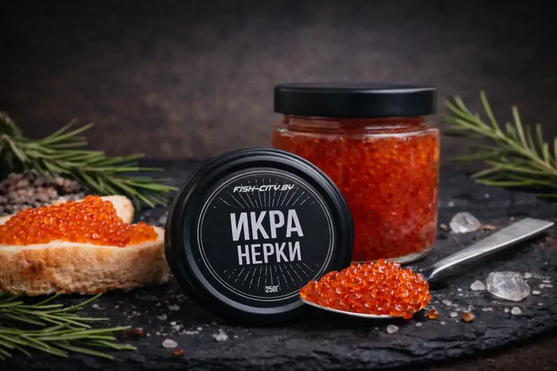

Икра
Икра нерки 250г
Цена и наличие
- 250 г210 BYN / шт.В наличии
Данные на 23.11.2026.
Характеристики
- Размерный ряд
- 250 г
- Упаковка
- стекло
Описание
Икра нерки – это продукт, который обладает множеством преимуществ и является популярным угощением.
ОСНОВНОЕ
Упаковка стекло Пищевая ценность на 100 г продукта белки – 32 г, жиры – 15 г, углеводы – 0 г Энергетическая ценность на 100 г продукта 263 ккал Состав икра нерки, соль поваренная, масло растительное, пищевые добавки (влагоудерживающий агент Е422, консерванты Е200, Е211) Изготовитель ООО «Устькамчатрыба», Камчатский край Условия и срок хранения хранить при температуре от -4 ℃ до -6 ℃ срок хранения не более 12 месяцев с даты производства; температура хранения икры -4 -6, а в бытовом холодильнике +4 +6, храним в нулевой зоне не больше 14 дней; с момента вскрытия банки храним не более 2 суток
ДОПОЛНИТЕЛЬНО
Красная икра нерки в фасовке 250 г — удобный вариант для семейного стола, праздничного застолья и приготовления нескольких видов закусок. Такой объем подойдет, если икру планируется подавать не только на бутербродах, но и использовать для блинов, тарталеток, канапе или оформления готовых блюд. Икра нерки отличается небольшими икринками, насыщенным вкусом и характерной легкой горчинкой. Ее вкус более яркий и выразительный по сравнению с некоторыми другими видами красной икры, поэтому нерку часто выбирают те, кто предпочитает насыщенный вкус лососевой икры. Фасовка 250 г подходит для компании или праздничного стола, где планируется несколько вариантов подачи. Икру можно сочетать со свежим хлебом, тостами, сливочным маслом, сливочным сыром, блинами, яйцами и другими продуктами с нейтральным вкусом. Красная икра нерки хорошо подходит как для классической подачи, так и для приготовления холодных закусок. Ее можно использовать для рыбных тарелок, тарталеток, канапе и оформления праздничных блюд. В продаже — икра нерки 250 г в удобной фасовке. Такой объем позволяет подготовить несколько видов закусок и подойдет для семейного торжества или застолья на несколько человек. Заказать икру нерки 250 г можно для праздничного стола, бутербродов, блинов, тарталеток и других блюд с красной икрой.